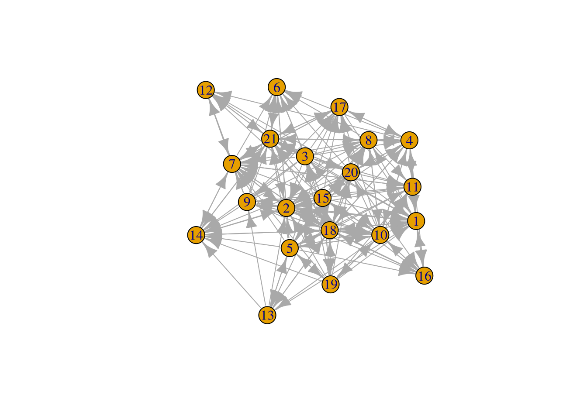
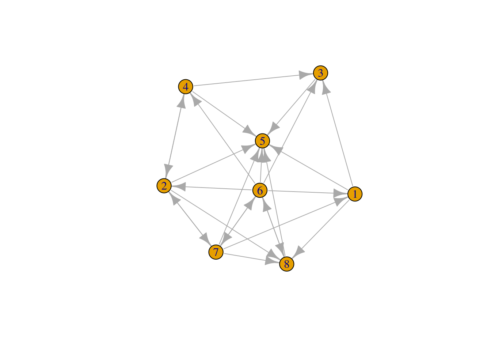
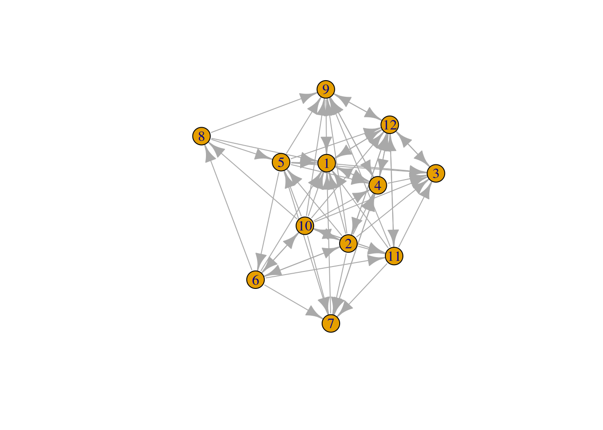
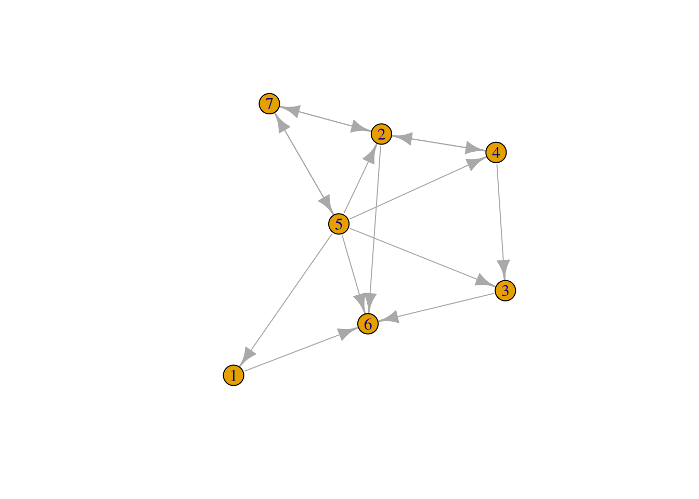
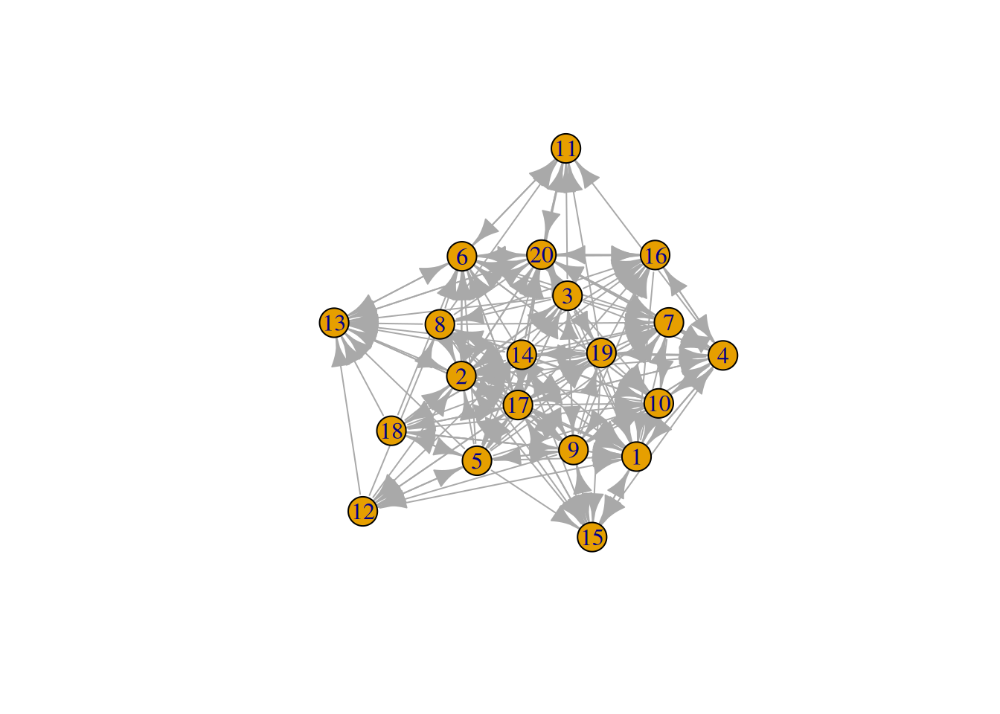
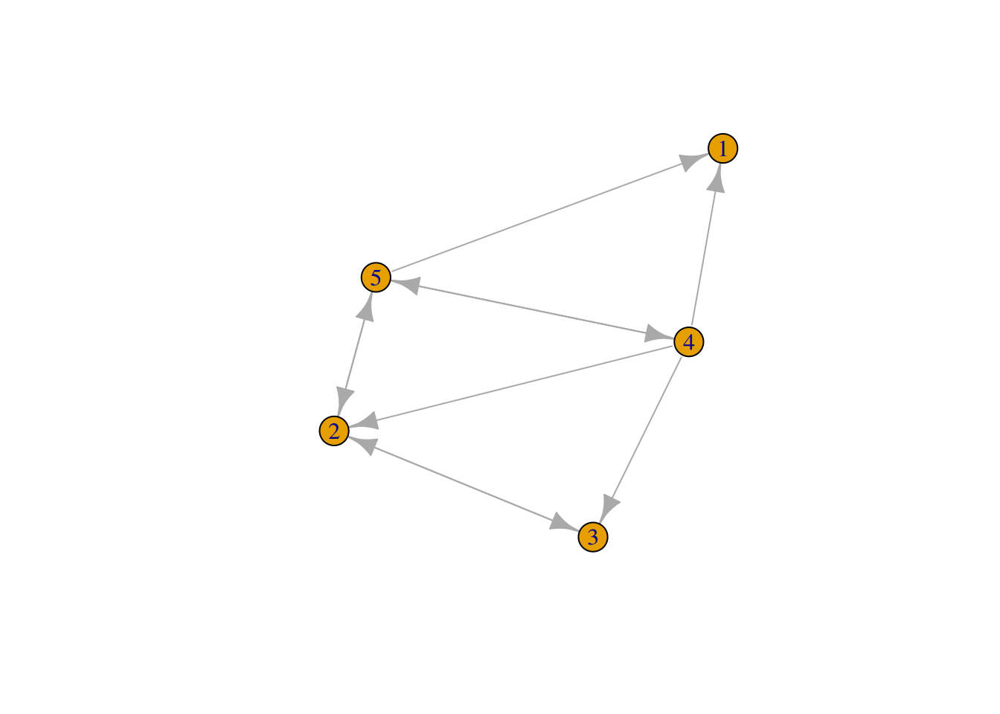

knitr::opts_chunk$set(echo = T)
knitr::opts_knit$set(root.dir = './')
library(tidyverse)
library(igraph)
library(tidygraph)
library(ggraph)
set_graph_style(family='sans') # This sets the default style to the graph styleMutating and filtering
We start with a “setup” block of code, that loads our libraries and initializes our settings. This block should work for basically all of our assignments this semester, so you can just copy and paste it.
R has a lot of great tools for working with tables (also called dataframes or tibbles). One really powerful and relatively intuitive set of tools is called the “tidyverse”. Tools in the tidyverse make assumptions about what data will look like—rows represent observations and columns represent variables that describe that observation.
The tidygraph package extends that paradigm to networks, by representing networks as two tables: 1) a table of nodes and node attributes and 2) a table of edges and edge attributes.
This lets you work with networks using many of the same tools that have been developed for working on other types of data.
Just to make things simple, we’ll use the Zachary Karate club data for most of this tutorial. Let’s load it, and save it as G
G <- create_notable('Zachary')If we look at G we can see that it’s already a tbl_graph object. It has 34 nodes and 78 edges.
G# A tbl_graph: 34 nodes and 78 edges
#
# An undirected simple graph with 1 component
#
# Node Data: 34 × 0 (active)
#
# Edge Data: 78 × 2
from to
<int> <int>
1 1 2
2 1 3
3 1 4
# ℹ 75 more rowsGetting to the data
Activating a table
Because a network object is really composed of two tables, we have to let R know which table we want to manipulate. This is done using activate(nodes) or activate(edges). You will see lots of examples of this later in this tutorial.
Mutate
mutate is a function that creates a new column in a spreadsheet/dataframe (in our case, either the spreadsheet for the nodes or the one for the edges).
Often, we will want to calculate some network statistic about the nodes or edges. However, you can also create other kinds of columns. For example, you could use mutate to give names to each of the nodes. The code below creates a small network and adds names to it. (The c is how we create a list of things in R)
(Note that the code throughout this tutorial uses “pipes”. Pipes (|>) let you express a sequence of operations, by taking the output of the previous operation and using it as the input of the next operation.)
play_gnp(5, .5) |>
activate(nodes) |>
mutate(names = c('Alfred','Bonnie', 'Clyde', 'Doug','Enola'))# A tbl_graph: 5 nodes and 10 edges
#
# A directed simple graph with 1 component
#
# Node Data: 5 × 1 (active)
names
<chr>
1 Alfred
2 Bonnie
3 Clyde
4 Doug
5 Enola
#
# Edge Data: 10 × 2
from to
<int> <int>
1 1 5
2 4 1
3 5 1
# ℹ 7 more rowsThe example below also uses mutate, but this time it calculates the degree of each node in the network and saves it in a new column called degree.
G |>
activate(nodes) |>
mutate(degree = centrality_degree())# A tbl_graph: 34 nodes and 78 edges
#
# An undirected simple graph with 1 component
#
# Node Data: 34 × 1 (active)
degree
<dbl>
1 16
2 9
3 10
4 6
5 3
6 4
7 4
8 4
9 5
10 2
# ℹ 24 more rows
#
# Edge Data: 78 × 2
from to
<int> <int>
1 1 2
2 1 3
3 1 4
# ℹ 75 more rowsHowever, note that if we look at G again, the degree column that we created no longer appears.
G# A tbl_graph: 34 nodes and 78 edges
#
# An undirected simple graph with 1 component
#
# Node Data: 34 × 0 (active)
#
# Edge Data: 78 × 2
from to
<int> <int>
1 1 2
2 1 3
3 1 4
# ℹ 75 more rowsThis is because we didn’t save it; by default mutate will just produce a temporary version of the new column. But don’t worry—saving it is super easy; we can just re-save it as G like this.
G <- G |>
activate(nodes) |>
mutate(degree = centrality_degree())The <- means take whatever is on the right side, and save it to the variable name on the left side. So, this takes all of the output of the mutate operation and saves it. Now, when we look at G, we’ll see the degree column.
G# A tbl_graph: 34 nodes and 78 edges
#
# An undirected simple graph with 1 component
#
# Node Data: 34 × 1 (active)
degree
<dbl>
1 16
2 9
3 10
4 6
5 3
6 4
7 4
8 4
9 5
10 2
# ℹ 24 more rows
#
# Edge Data: 78 × 2
from to
<int> <int>
1 1 2
2 1 3
3 1 4
# ℹ 75 more rowsFiltering
The one other thing we’re going to learn about today is filtering. Sometimes we may want to know about some subset of the nodes or edges in a network.
Usually, we would do this based on some attribute of the nodes—for example, looking just at the network of the older (or younger) members of the group.
Let’s load in a richer network from the networkdata library. (See R Lab 2 for instructions on how to install it if this code doesn’t work.)
This code loads the networkdata library and loads the ht_advice network. It then changes it from an igraph network to a tbl_graph network object.
library(networkdata)
Attaching package: 'networkdata'The following object is masked from 'package:dplyr':
starwarsht_advice <- ht_advice |> as_tbl_graph()
ht_advice# A tbl_graph: 21 nodes and 190 edges
#
# A directed simple graph with 1 component
#
# Node Data: 21 × 4 (active)
age tenure level dept
<dbl> <dbl> <dbl> <dbl>
1 33 9 3 4
2 42 20 2 4
3 40 13 3 2
4 33 8 3 4
5 32 3 3 2
6 59 28 3 1
7 55 30 1 0
8 34 11 3 1
9 62 5 3 2
10 37 9 3 3
# ℹ 11 more rows
#
# Edge Data: 190 × 2
from to
<int> <int>
1 1 2
2 1 4
3 1 8
# ℹ 187 more rowsWe can see that there are 21 nodes with four attributes: age, tenure, level, and dept. These nodes have 190 edges. Let’s plot the network.
plot(ht_advice)
Now we’re going to filter the graph. Maybe we just want to see the network from the Sales department. Let’s pretend like that’s department two, and filter to just those nodes.
Remember, we first activate the nodes. Then, we use filter to write a condition or set of conditions that will evaluate to True for each of the nodes that we want to keep. Usually, this will involve one node attribute (like dept) and a comparison, like <, >, or ==. Note that when we are testing if things are equal, we use two equal signs in R. This is because one equals sign can be used to assign something to a variable.
ht_advice |>
activate(nodes) |>
filter(dept == 2) |> # Filter to just nodes in dept 2
print() |> # We can throw in print() and it will print the output of the last step. In this case, the filtered graph object.
plot()# A tbl_graph: 8 nodes and 25 edges
#
# A directed simple graph with 1 component
#
# Node Data: 8 × 4 (active)
age tenure level dept
<dbl> <dbl> <dbl> <dbl>
1 40 13 3 2
2 32 3 3 2
3 62 5 3 2
4 48 0 3 2
5 43 10 2 2
6 40 8 3 2
7 32 5 3 2
8 38 12 3 2
#
# Edge Data: 25 × 2
from to
<int> <int>
1 1 3
2 1 5
3 1 8
# ℹ 22 more rows
Chaining Filtering and Mutating
Finally, we can use mutate and filter together in powerful ways.
For example, we may want to get the betweenness centrality of just the Sales department.
ht_advice |>
activate(nodes) |>
filter(dept == 2) |>
mutate(betweenness = centrality_betweenness())# A tbl_graph: 8 nodes and 25 edges
#
# A directed simple graph with 1 component
#
# Node Data: 8 × 5 (active)
age tenure level dept betweenness
<dbl> <dbl> <dbl> <dbl> <dbl>
1 40 13 3 2 0.5
2 32 3 3 2 4.5
3 62 5 3 2 0
4 48 0 3 2 1
5 43 10 2 2 0
6 40 8 3 2 9
7 32 5 3 2 3
8 38 12 3 2 5
#
# Edge Data: 25 × 2
from to
<int> <int>
1 1 3
2 1 5
3 1 8
# ℹ 22 more rowsRemember that the order matters - if we ran mutate before filter then it would calculate the betweenness centrality before filtering.
Excercises
- Copy the code from lines 60-65 and modify it below to calculate the betweenness centrality instead of the degree of
G. Name the columnbetweenness(Hint: use thecentrality_betweenness()function. (Here is the list of all centrality functions.)
# A tbl_graph: 34 nodes and 78 edges
#
# An undirected simple graph with 1 component
#
# Node Data: 34 × 2 (active)
degree betweenness
<dbl> <dbl>
1 16 231.
2 9 28.5
3 10 75.9
4 6 6.29
5 3 0.333
6 4 15.8
7 4 15.8
8 4 0
9 5 29.5
10 2 0.448
# ℹ 24 more rows
#
# Edge Data: 78 × 2
from to
<int> <int>
1 1 2
2 1 3
3 1 4
# ℹ 75 more rows- Now, modify your code above to save the
betweennesscolumn toG. When you’re done, the nodes spreadsheet ofGshould have two new columns -degreeandbetweenness. Display G (by just typingGat the end of the code block) to make sure it worked.
G# A tbl_graph: 34 nodes and 78 edges
#
# An undirected simple graph with 1 component
#
# Node Data: 34 × 2 (active)
degree betweenness
<dbl> <dbl>
1 16 231.
2 9 28.5
3 10 75.9
4 6 6.29
5 3 0.333
6 4 15.8
7 4 15.8
8 4 0
9 5 29.5
10 2 0.448
# ℹ 24 more rows
#
# Edge Data: 78 × 2
from to
<int> <int>
1 1 2
2 1 3
3 1 4
# ℹ 75 more rows- It’s more common that we mutate the nodes, but sometimes we want to mutate the edges. For example,
centrality_edge_betweenness()is one measure of how important each edge in a network is. Usemutateto calculate the edge betweenness of each edge inG.
# A tbl_graph: 34 nodes and 78 edges
#
# An undirected simple graph with 1 component
#
# Edge Data: 78 × 3 (active)
from to edge_betweenness
<int> <int> <dbl>
1 1 2 14.2
2 1 3 43.6
3 1 4 11.5
4 1 5 29.3
5 1 6 43.8
6 1 7 43.8
7 1 8 12.8
8 1 9 41.6
9 1 11 29.3
10 1 12 33
# ℹ 68 more rows
#
# Node Data: 34 × 2
degree betweenness
<dbl> <dbl>
1 16 231.
2 9 28.5
3 10 75.9
# ℹ 31 more rows- Filter the
ht_advicenetwork to just the people who are older than 35. How many nodes are there? How many edges? (Hint: you can useprintlike I do in the example above to print information about the graph before you plot it)

- Filter the
ht_advicenetwork to only those nodes whosetenureis less than the median value fortenure. Plot the graph.

- Sometimes we want to filter before calculating statistics, and sometimes we want to calculate statistics first. Calculate the degree centrality for
ht_advice, save it in a column calleddegree, and then filter to just the nodes withdegreeof at least 2, and plot the network.

- Let’s go crazy. Take the
ht_advicenetwork, filter to just the nodes withdeptequal to 2, and then calculate the degree centrality. Then, filter to just the nodes with a degree centrality of at least 3. Finally, plot the network.
